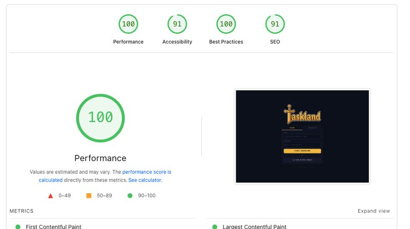

A task manager that grows with you — where productivity feels like leveling up.
I've used everything — Notion, Todoist, Things, TickTick. They worked. But none kept me motivated for long. They became just another place where I listed things I didn't do rather than a real tool.
So I stopped and thought: what if I build my own? Not as a UI exercise, but as a complete product — with research, game mechanics, animation, and code. A place where every task I complete makes something actually happen.
Before drawing any screen, I spent time analyzing what existed. The market split clearly into two groups.
On one side, functional task managers — clean, efficient, no personality. On the other, gamification attempts — points, badges, mechanical streaks that had clearly been glued on top of an existing product with no coherence to what the user was actually doing.
What I was looking for didn't exist yet: a product where character progression made emotional sense. Where completing a hard task weighed more than completing an easy one. Where the user felt they were actually getting stronger, not just accumulating arbitrary numbers.
From a theoretical standpoint, the market was exploiting only external rewards. The Octalysis Framework by Yu-kai Chou describes eight core engagement drives — and most gamified productivity apps exploited only one or two. The deepest ones — Epic Meaning, Creative Empowerment, Reward Unpredictability — were practically untouched.
The market ignored the most powerful engagement drives: Development & Accomplishment, Creative Empowerment, and Epic Meaning. Most gamified apps exploited only points and badges — extrinsic rewards without intrinsic motivation anchoring.
The choice of pixel art wasn't nostalgia. It was precision.
Pixel art carries a specific cultural weight for the generation that grew up with video games. It communicates authenticity — every pixel is a manual decision. And it allows enormous expressiveness with limited resources, which was perfect for a solo project where I needed to animate the characters myself.
The process was sequential by necessity: first static sprites, to define proportions, palette, and personality for each character. Then manual animation — idle and attack — frame by frame.
The animation wasn't aesthetic detail. It was functional. There's a concept in flow theory called immediate feedback — the idea that deep engagement depends on seeing the result of your actions in real time. A character that reacts when you complete a task is a much more visceral feedback than a text notification.
Character Sprite Animation
Hand-crafted pixel art sprites animated in Rive — idle and attack cycles that bring the RPG world to life.
Attack Animation
The attack cycle in detail — every frame designed to communicate reactivity and reward.
In the first version, the mechanic worked like this: the user created their monster, defined how many tasks they'd do, and the monster scaled in strength accordingly. It seemed logical. It created upfront commitment.
After testing with 10 users, the problem became obvious. Before seeing any product value, the user needed to make a configuration decision. It was unnecessary friction at the wrong moment.
BJ Fogg's Behavior Model explains well why this fails: for an action to happen, motivation, ability, and prompt must align at the same moment. Putting a setup decision at the beginning dissolved both motivation and perceived ability before the user experienced any reward.
In game design language: the reward loop was too late.
For a behavior to happen, Motivation, Ability and Prompt must align at the same moment. Asking for a setup decision during onboarding reduces perceived ability and dissolves motivation before the user experiences any reward. The reward loop was too late.
The change was surgical. Monsters are now always present — no prior configuration needed. The user enters, sees the monster, completes a task, deals damage. The reward loop happens within the first 60 seconds of use.
The system's depth wasn't lost — it was revealed progressively. As the user advances, monsters get stronger, the multiplier system opens up, achievements appear. This is the principle of Progressive Disclosure in practice: not hiding complexity, but not requiring it before the user is ready.
Create monster → Define task count → Start tasks → Eventually see reward. Too many steps before value.
See monster → Complete task → Deal damage → Instant reward. Progressive Disclosure handles the rest.
This is the heart of Taskland — every completed task deals damage to a monster. The harder the task, the bigger the hit. Defeat the monster, earn XP, level up, and face the next one.
Battle System
The RPG battle in action — tasks become attacks, and every completion brings you closer to victory.
This is the part I'm most proud of in Taskland. The damage a character deals to a monster isn't fixed — it depends on the task difficulty plus a multiplier that comes from four different sources.
Habit System
Active habits with streak tracking and damage multipliers — the longer you maintain a habit, the stronger your character becomes.
Product Walkthrough
Taskland's complete interface — where retro RPG aesthetics meet real productivity workflows.
A gamified retro interface doesn't mean slow software. Pixel art and engineering discipline can coexist.

Building a product from scratch, alone, end to end — research, sprite, animation, interface, code — is an exercise that forces a clarity of vision that teamwork rarely demands. When you're the only one responsible for everything, you can't transfer a decision to anyone.
The biggest learning was simple: the entry barrier is the enemy of motivation. V1 was mechanically interesting but asked for commitment before delivering value. Removing that friction and letting the reward loop happen immediately transformed the experience completely.
"The entry barrier is the enemy of motivation. Remove the friction, let the reward loop happen immediately."
The biggest personal takeaway